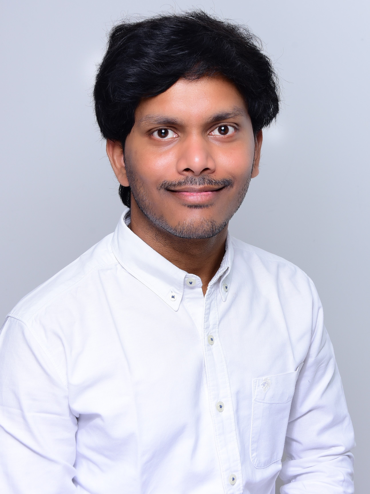

From a small town in India to building tools that power automotive teams worldwide.

I was born in 1994 into a family that was rich in values but short on everything else. My father was a school teacher — a man who never earned much but walked through his town like a king, because everyone knew him, respected him, and trusted him. My mother held the house together in ways only Indian mothers know how. I was the middle child, often sick, often home. But being home meant I read everything I could get my hands on, studied on my own, and somehow kept finishing first or second in my class. Growing up watching my parents stretch every rupee taught me something no textbook ever could — that the things worth having are the things you fight for.
That belief was put to the test during a science exam I was completely unprepared for. I had been too sick to study, and I sat there staring at the paper, tears rolling down, convinced this was the day my streak ended. Then my science teacher walked over, leaned in, and said something I carry with me to this day: "You sat in my class. You listened. You understood. Now stop crying and write what you know — in your own words. If I can understand it, you get the marks." I wrote. I scored 95%. That was the day I stopped trying to memorize the world and started trying to understand it.
I wanted a bicycle for as long as I could remember. We couldn't afford one, so I learned to ride on borrowed ones — a friend's bike here, a neighbor's there. After years of asking, my father struck a deal: score above 500 in my 10th standard exams, and he would find a way. I scored 499. A year later, he managed to get me one anyway. I was bedridden for a month and couldn't touch it. When I finally rode it, I had five days of pure joy — and then someone stole it. Standing there with nothing again, I made a quiet promise to myself: I will never depend on anyone for anything. What I earn with my own hands, that stays.
Against all odds — financial hardships, entrance exams I barely had time to prepare for, and my mother pledging her only gold jewelry so I could afford the course fee — I completed my engineering degree in Electronics and Communication. From my second year onward, I started self-learning subjects, clarifying concepts with professors, and then teaching fellow students — Control Systems, Embedded Systems, Microprocessors, Digital Signal Processing — semester after semester, while working part-time to fund my own education. I then earned a Post Graduate Diploma in Embedded Systems Design at CDAC Kolkata with the top grade.
My career in the automotive industry began at Continental, where a shy kid from a small town grew into a Technical Architect in just six years. I took worldwide responsibility for MK100/MKC1 braking system resource estimation, traveled to Germany to prepare quotations for Ford, BMW, and Volvo projects, integrated GLIWA T1 timing analysis for both Vector OS and Elektrobit OS, extended tooling for TriCore microcontrollers and the MKC2 braking product, and collected 15 spot awards along the way — not because I chased them, but because I kept solving problems nobody asked me to solve. Whenever I moved to a new role, I trained deputies and helped colleagues take full ownership. Before leaving Continental, I completed the Train the Trainer program and handed over to 4+ deputies across teams.
In 2022, I packed my life into two suitcases and moved to Germany. At Marquardt GmbH, I design and maintain tools for the Software Product Line Engineering platform — building automation that saves teams days of manual work, replacing expensive commercial tools with custom Python solutions, and conducting trainings that help colleagues ship better software. Every tool I build carries the same philosophy: if someone has to do it manually twice, it should be automated forever.
I am driven by curiosity, shaped by struggle, and always learning. Whether it is build systems, software architecture, design patterns, automation, or a new recipe in the kitchen — I don't stop until I understand how it works.